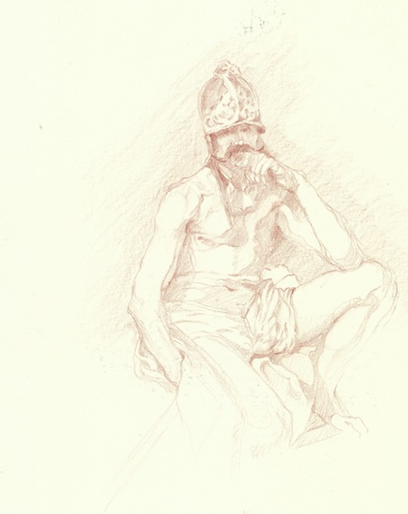
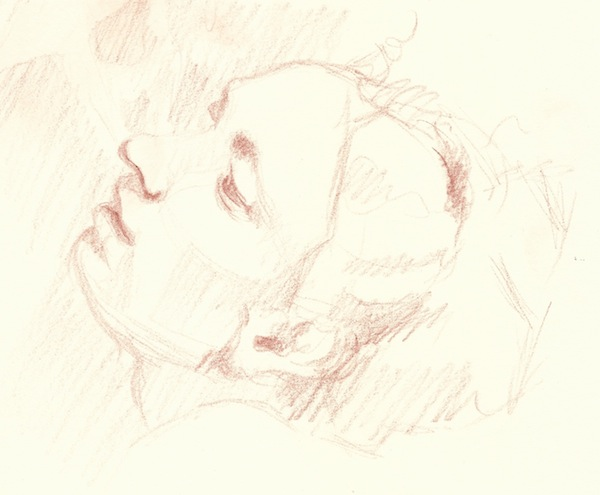
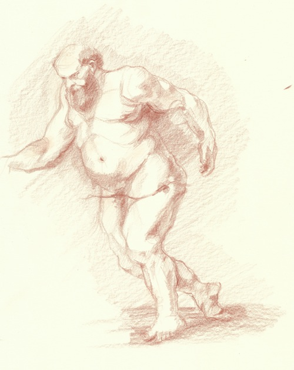
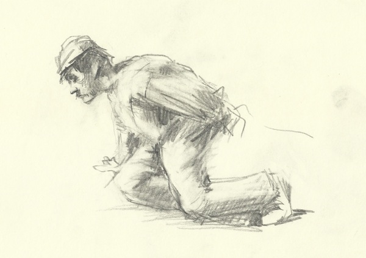

Pencil sketch after Diego Velázquez

Pencil sketch after Anthony Van Dyck
Pencil sketch after Jacob Collins

Pencil sketches after Adolph Menzel

Pencil sketch after Adolph Menzel

Study after Diego Velázquez's Portait of Philip IV

Pencil sketch after Correggio
Charcoal sketch after Gustave Courbet

Pencil sketch after Peter Paul Rubens

Pencil sketch after Adolph Menzel
Pencil sketches after Käthe Kollwitz

Pencil sketch after José de Ribera
Pencil sketch after Peter Paul Rubens
Pencil sketch after Egon Schiele

Pencil sketch after Egon Schiele

Pencil sketch after Francisco José de Goya y Lucientes

Pencil sketch after Francisco José de Goya y Lucientes

Oil sketch after Diego Velázquez
Oil sketch after Caravaggio
Oil sketch after Caravaggio

Oil sketch after unknown artist

Oil sketch after Carolus Duran
Oil sketch after John Singer Sargent

Oil sketch after Edgar Degas
Oil sketch after Adolph Menzel
Oil sketch after Diego Velázquez

Oil sketch after Diego Velázquez

Sketches after Diego Velázquez

Pencil sketches after Dutch Masters
Sketches after Honoré Daumier
Pencil sketches after Picasso

Pencil sketches after Wilhelm Busch